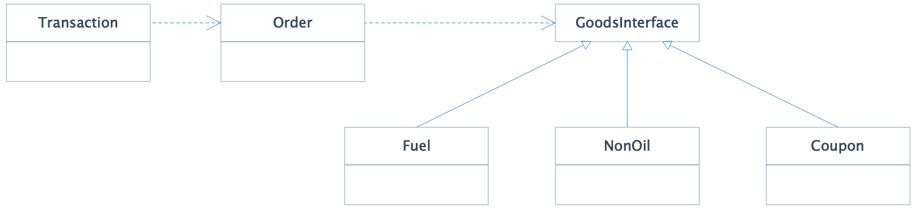
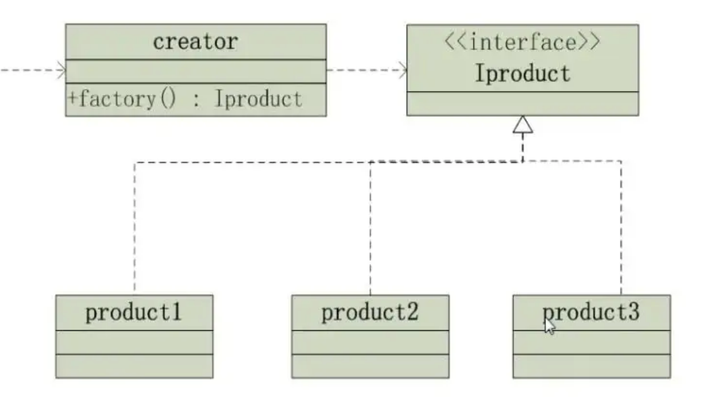

On the Factory Pattern
Ask a hundred interview candidates which design patterns they know, and at least ninety-nine will name the Factory Pattern. This tells us two things: the Factory Pattern is ubiquitous in a developer's daily work, and it is among the most intuitive to grasp—both conceptually and in implementation.
But if you probe deeper—What problem does the factory pattern actually solve? How does it solve it? What are its drawbacks? When should you avoid using it?—many candidates begin to stumble.
The Complexity of Software Design
At its core, software is the medium through which humans instruct machines to manage real-world affairs. Consequently, the inherent complexity of the human world is inevitably mirrored in software.
As high school physics teaches us: motion is absolute, rest is relative. Or as the adage goes, "The only constant is change itself." It is the constant evolution of real-world needs that creates software complexity—or, in practical terms, "the uncertainty of the future." Requirements shift endlessly; no software remains static.
The natural consequence of this constant movement is an increase in entropy—just as an unattended room inevitably becomes messy. As software evolves, it drifts toward chaos. Existing logic is modified, new features are bolted on, quick hotfixes are applied, and the system grows increasingly complex, opaque, and brittle. Bugs multiply, and further modifications become harder.
Developers often hold an intuitive but mistaken belief: that by systematically fixing bugs, they can eventually reduce the bug count to zero. Unless a system is completely frozen after release, no matter how fast you write code, you cannot outpace bug growth. This is particularly evident in complex business systems.
To combat software entropy, developers rely on two primary weapons: refactoring and design patterns.
Refactoring is a retroactive defense—rebuilding the system later to reduce accumulated chaos. It is based on the premise that we will understand the business domain and architecture better in the future, or that the current design has reached its limit for accommodating change. In practice, however, major refactoring often occurs only when the system is on the verge of breaking.
Design patterns are a proactive defense—building the system today to withstand future complexity. They distill proven architectural solutions into standardized templates. In essence, design patterns leverage what is stable today to shield the system from the uncertainties of tomorrow.
Design patterns tackle complexity primarily through two mechanisms: abstraction and isolation.
Three Types of Factories
Every design pattern aims to manage architectural complexity and achieve stability. The Factory Pattern falls under the umbrella of creational patterns (alongside Singleton, Prototype, and Builder), focusing specifically on mitigating the complexity of object creation.
When does object creation become genuinely complex?
- When a straightforward
newoperator with a couple of basic parameters is all you need, there is no creation complexity, and introducing a factory would be over-engineering; - When object creation is polymorphic: such as when you need to instantiate different subtypes depending on runtime configuration, which often results in messy conditional branches;
- When the instantiation process itself is elaborate: even if you only have a single concrete class, creating its instance might involve parsing configuration files, fetching remote settings, or assembling multiple dependencies.
Before diving deeper, let's outline the three variants of the factory pattern (which deviate slightly from the Gang of Four's original classification for practical clarity):
- Simple Factory: Consists of a static method within the target class, or a separate dedicated factory class, that handles instance creation based on given arguments;
- Factory Method: An architectural step up from the Simple Factory. It defines a formal factory interface, allowing individual factory implementations to return specific subtype instances. This delegates the creation responsibility to subclasses, bringing the system into alignment with the Open-Closed Principle and the Single Responsibility Principle;
- Abstract Factory: An upgrade to the Factory Method designed to handle multi-dimensional complexity. Rather than letting the number of factory classes explode alongside the number of concrete products, the Abstract Factory groups related objects together. While a Factory Method creates a single type of product, an Abstract Factory provides an interface for creating families of related or dependent objects.
This taxonomy can feel overwhelming. The key takeaway: in both structural overhead and problem-solving capacity, Simple Factory < Factory Method < Abstract Factory. Each is an evolution of the previous. Keep these two dimensions in mind; they guide our primary design principle: solve problems with the simplest tool possible, and only upgrade when the problem demands it.
Let's explore how the Factory Pattern leverages abstraction and isolation to tame object creation complexity.
Simple Factory
To ground this in reality, let's suppose we are building a transaction processing system for a gas station. Customers can purchase fuel, convenience store merchandise, and virtual items (like digital coupons). Our core ordering logic revolves around three simplified classes (assuming an order contains exactly one type of item): Transaction, Order, and Goods. A Transaction instantiates an Order, which in turn depends on Goods.
Now, let's assume that instantiating Goods is highly complex: it involves combining multiple related objects and querying external services for product specifications, live inventory, and pricing details.
There are two primary ways to manage the dependency between Order and Goods:
- Create
Goodsdirectly insideOrder(passing agoodsIddown from the outside); - Inject a pre-constructed
Goodsobject via the constructor.
With the first approach, Order creates Goods internally:
class Order {
private $goods;
public function __construct($goodsId) {
// Complex creation logic embedded here
$this->goods = new Goods($goodsId);
// ... more setup code
}
}The constructor contains large blocks of creation code, violating best practices. We'd typically extract a separate method:
class Order {
private $goods;
public function __construct($goodsId) {
$this->goods = $this->createGoods($goodsId);
}
private function createGoods($goodsId) {
// Complex creation logic
return new Goods($goodsId);
}
}Slightly better, but three problems remain:
Ordertakes on the extraneous responsibility of instantiatingGoods(which is complex and subject to change), violating the Single Responsibility Principle;Ordermust understand howGoodsis constructed, violating the Law of Demeter and breaking encapsulation;- Any other area of the codebase that needs to create a
Goodsobject would have to duplicate this setup code, severely hurting maintainability. (While we could exposeOrder::createGoods()publicly, doing so would introduce unnatural dependencies and make the codebase harder to reason about).
The Law of Demeter (also known as the Principle of Least Knowledge) states that a unit should have limited knowledge about other units, only interacting with its immediate "friends."
To resolve these issues, we can move the createGoods() method out of Order and into Goods itself, charging Goods with its own instantiation. This elegantly encapsulates the creation details:
class Goods {
public static function create($goodsId) {
// Complex creation logic, encapsulated within Goods
return new Goods($goodsId);
}
}This restores encapsulation. Future modifications to Goods's instantiation logic are confined to the Goods class. Many production systems implement Simple Factory this way—it keeps the code clean while preserving structural flexibility.
Now let's examine our second approach: injecting the Goods object into Order via dependency injection. In this scenario, the responsibility of creating Goods is pushed back to the Transaction. Let's look at a direct, naive implementation:
class Transaction {
public function execute() {
$goods = new Goods($goodsId); // Complex creation here
$order = new Order($goods);
// ...
}
}This suffers from the same issues: Transaction takes on the burden of creating Goods, violating the Single Responsibility Principle. Future modifications to the creation logic would force changes to Transaction—and if other classes like ClassX or ClassY also instantiate Goods, the duplication spreads.
A potential fix is to move the creation logic into Goods itself. But is that always the right architectural choice?
It depends. If creating Goods is manageable and the logic is stable, a static create method inside Goods is perfectly fine (and common in practice). If the creation process involves complex assembly of multiple dependencies and is subject to frequent change, this instability will bleed into Goods itself. Fundamentally, forcing Goods to construct itself violates Single Responsibility—creation is a consumer's or coordinator's responsibility, not the provider's.
We are left with a classic design contradiction: we don't want consumers (like Transaction and Order) to know the construction details of Goods (which would compromise their stability), yet we also don't want the provider (Goods) to construct itself (which would compromise its own stability). How do we resolve this deadlock?
The solution is to introduce a third party—a dedicated factory class—that encapsulates this creation complexity in an independent, single-purpose component.
class GoodsFactory {
public static function create($goodsId) {
// Complex creation logic isolated here
return new Goods($goodsId);
}
}Now, any change to the creation logic of Goods is isolated to the GoodsFactory—leaving Transaction, Order, and Goods completely untouched. This is the essence of the Simple Factory.
This is the Factory Pattern solving creation complexity through isolation: the volatile process of instantiating Goods is confined to a separate, single-responsibility GoodsFactory, shielding the rest of the system from instability.
Factory Method
Our previous example illustrated isolation, but did not showcase abstraction to its full potential.
Recall our gas station scenario: customers can buy fuel, convenience store items, or virtual goods like digital coupons. A robust design abstracts these variants under a single GoodsInterface, implemented by distinct classes:
interface GoodsInterface {
// ...
}
class Fuel implements GoodsInterface { }
class NonOil implements GoodsInterface { }
class Coupon implements GoodsInterface { }
By shifting Order's dependency from the concrete Goods class to the abstract GoodsInterface, we decouple the core logic from specific product types. We would typically inject this dependency:
class Transaction {
public function execute($type, $goodsId) {
// Big if-else to create the right GoodsInterface implementation
if ($type == 'fuel') {
$goods = new Fuel($goodsId);
} elseif ($type == 'nonoil') {
$goods = new NonOil($goodsId);
} elseif ($type == 'coupon') {
$goods = new Coupon($goodsId);
}
$order = new Order($goods);
// ...
}
}Here, Transaction contains a prominent conditional branch to instantiate the correct GoodsInterface. Applying what we have learned, we should immediately isolate this creation logic into a factory class:
class GoodsFactory {
public static function create($type, $goodsId) {
if ($type == 'fuel') {
return new Fuel($goodsId);
} elseif ($type == 'nonoil') {
return new NonOil($goodsId);
} elseif ($type == 'coupon') {
return new Coupon($goodsId);
}
}
}What are the limitations of this Simple Factory approach?
Abstracting Goods into GoodsInterface signals that we expect high variability in product types. We introduced the interface to improve design stability, ensuring other components depend on a stable abstraction rather than volatile concrete implementations. However, we must constantly modify our simple factory, tacking on more conditional branches. GoodsFactory itself becomes unstable. If the creation logic for each product type is complex, the factory class quickly becomes bloated and unmaintainable.
Applying the same logic we used for Goods, we can introduce another abstraction layer—an interface—to solve the factory's own instability.
We extract a FactoryInterface:
interface FactoryInterface {
public function create($goodsId);
}
class FuelFactory implements FactoryInterface {
public function create($goodsId) {
return new Fuel($goodsId);
}
}
class NonOilFactory implements FactoryInterface {
public function create($goodsId) {
return new NonOil($goodsId);
}
}
class CouponFactory implements FactoryInterface {
public function create($goodsId) {
return new Coupon($goodsId);
}
}Wait—while these specialized factories now comply with the Open-Closed Principle, how do we actually use them? Like this?
class Transaction {
public function execute($type, $goodsId) {
if ($type == 'fuel') {
$factory = new FuelFactory();
} elseif ($type == 'nonoil') {
$factory = new NonOilFactory();
} elseif ($type == 'coupon') {
$factory = new CouponFactory();
}
$goods = $factory->create($goodsId);
$order = new Order($goods);
// ...
}
}This solves nothing. Transaction has not fundamentally improved—we have merely shifted the conditional branching from "creating goods" to "creating factories." Transaction remains cluttered with object-instantiation logic entirely unrelated to its core responsibility. Every time we introduce a new product type, we must modify Transaction—even though it should remain decoupled from product and factory variations.
To tie it all together, the Factory Method pattern introduces one final piece: a "factory of factories" (often implemented as a container) that encapsulates the selection and instantiation of the factories themselves:
class GoodsFactoryContainer {
public static function getFactory($type): FactoryInterface {
if ($type == 'fuel') {
return new FuelFactory();
} elseif ($type == 'nonoil') {
return new NonOilFactory();
} elseif ($type == 'coupon') {
return new CouponFactory();
}
}
}This is the complete Factory Method Pattern.

Now, Transaction and our specialized factories are stable, with clear single responsibilities and excellent extensibility. The only remaining point of instability is the GoodsFactoryContainer. We have transferred the instability from Transaction and Order into GoodsFactoryContainer.
In software architecture, instability can only be transferred, never truly eliminated. Our ultimate goal is simply to isolate and minimize the blast radius of this instability, thereby maximizing the stability of the rest of our system.
If instability can only be transferred, why bother moving it at all?
In our gas station system, product creation is inherently unstable due to the shifting nature of business requirements. This variation threatens the stability of our code. By extracting this volatile creation logic from the stable business process of handling an order, abstracting it behind clean interfaces, and hiding the concrete resolution inside a container, we ensure that future changes to product types never leak into our transaction-processing logic.
Notice the simplicity of the client code:
$factory = GoodsFactoryContainer::getFactory($type);
$goods = $factory->create($goodsId);These two lines perfectly embody the golden rule: program to an interface, not an implementation.
Order depends on GoodsInterface. Who resolves that interface? FactoryInterface. And who resolves FactoryInterface? GoodsFactoryContainer.
If we need to adjust product creation logic, the change is entirely self-contained. No modifications leak past GoodsFactoryContainer and its factory classes. Because the container is designed to handle volatile selection, modifying it does not violate the Open-Closed Principle or Single Responsibility Principle. (Forcing changes upon Transaction or Order to accommodate new products would violate these principles, as those classes should have zero awareness of creation details).
Through abstraction and isolation, the Factory Pattern tames object creation complexity. However, it carries a caveat: if your domain model has multi-dimensional variations, the number of concrete classes and corresponding factories can explode. For instance, products varying across two independent dimensions with three variations each yield 3 × 3 = 9 classes and 9 factories. This is where the Abstract Factory shines: it collapses these dimensions by grouping related products, letting a single factory handle an entire product family and preventing class explosion.
In practice, I have rarely encountered a real-world scenario that warranted such a complex setup, which is why I have omitted an Abstract Factory implementation here. If your design requires complex, multi-dimensional inheritance, it is usually a sign that your architecture leans too heavily on inheritance—a common pitfall. Modern software engineering prefers composition over inheritance (leveraging patterns like the Decorator or Strategy) to keep systems lean and flexible.
Summary
The Factory Pattern is prevalent in modern frameworks. The most famous real-world example is the Inversion of Control (IoC) Container—a centralized factory that instantiates and manages objects across the entire system. It automatically resolves deep dependency trees, allowing developers to configure which concrete implementation resolves a given interface at the outermost configuration layer.
When applying the Factory Pattern, adhere to the KISS principle (Keep It Simple, Stupid). Start with a Simple Factory. In the early phases of a system's lifecycle, our domain understanding is rarely deep enough to justify elaborate architectures. Reaching for heavy machinery prematurely leads to over-engineering. There are no silver bullets in software design; every pattern introduces trade-offs in readability, complexity, and cognitive load. The Factory Pattern is no exception—even the Factory Method requires a container helper, adding structural overhead. As the codebase matures and we refactor, our understanding crystallizes. Only when we encounter concrete pain points should we transition to more complex abstractions.
To summarize:
- Software complexity mirrors the inherent complexity of the real world we model.
- Software systems are subject to entropy increase, naturally drifting toward chaos over time. Design patterns and refactoring act as vital anti-entropy forces.
- The Factory Pattern specializes in managing the complexity of object creation.
- It achieves this primarily through two mechanisms: abstraction (hiding concrete types) and isolation (confining creation details).
- In terms of complexity and overhead: Simple Factory < Factory Method < Abstract Factory. Always start simple and avoid premature optimization.
- The ultimate goal of software design is to cultivate stability.
- Instability in a system can only be transferred, never eliminated. By isolating volatile logic, we minimize the blast radius of change and protect the stability of the system as a whole.